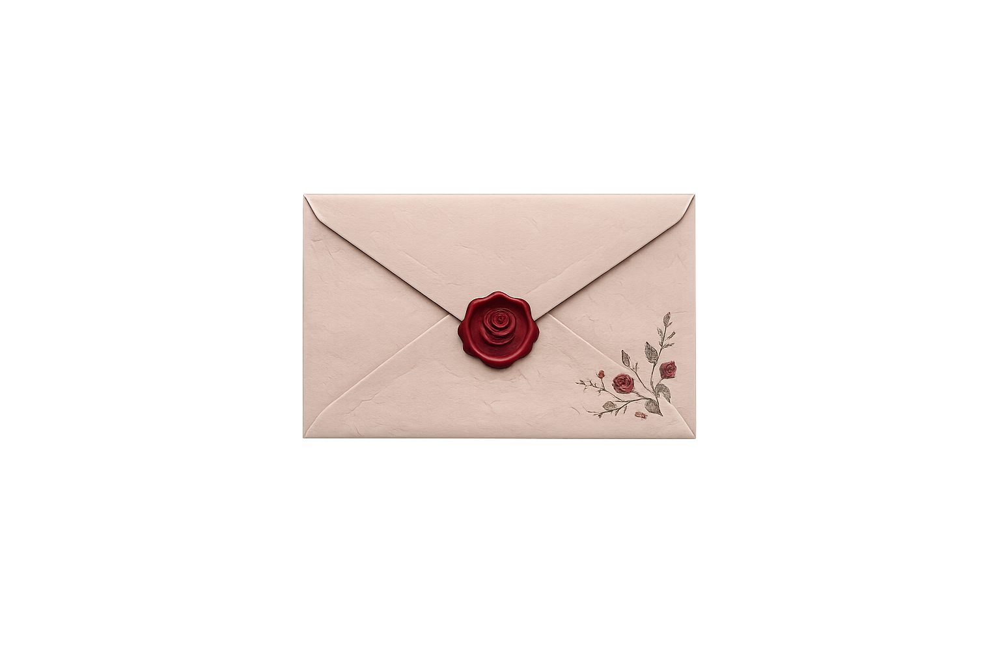

✨ Clique para abrir ✨
eu te amo muito kk tipo, muito mesmo. Kk E às vezes eu acho até engraçado pensar no quanto eu mudei depois que te conheci, porque antes eu nem imaginava que alguém pudesse se tornar tão importante assim pra mim. hoje eu gosto muito de ficar com você, conversar com você, fazer qualquer coisa com você, até ficar falando besteira e rindo de coisas completamente idiotas.. e pensando bem, é muito doido que a gente tenha conseguido se conhecer depois de tudo. por toda aquela questão de eu ter te ignorado e essas coisas KKKKKKKKKKKKKKK. se eu soubesse que você ia se tornar tão importante pra mim, talvez eu tivesse sido menos tonga desde o começo. Mas acho que sla, de algum jeito, a gente tinha que se conhecer mesmo. eu também gosto muito de ver o quanto você se importa com as coisas que você gosta. admiro muito quem você é.. talvez eu nem fale isso tanto quanto deveria, mas eu admiro você de verdade. e eu sou muito grata por você ter entrado na minha vida, muito mesmo. você acabou virando uma das pessoas mais importantes pra mim e eu não consigo imaginar minha vida do mesmo jeito sem você nela. Hj eu tava pensando nos nossos cachorrinhos que estão abandonados no nosso mundo e também nos nossos filhos, a Helena, a Maite e o Cristiano Ronaldo (odeio esse nome, mas aparentemente não tenho escolha). Sla te amo amor quero q vc seja o homem mais feliz e amado da historia..rs enfim, eu só queria que você soubesse que eu te amo muito e que sou muito feliz por ter você comigo. obrigada por ser você, por me fazer rir, por me aguentar e por estar na minha vida. eu te amo muito, meu amor. 🤍 com amor, sua futura esposa ← Voltar às Opções